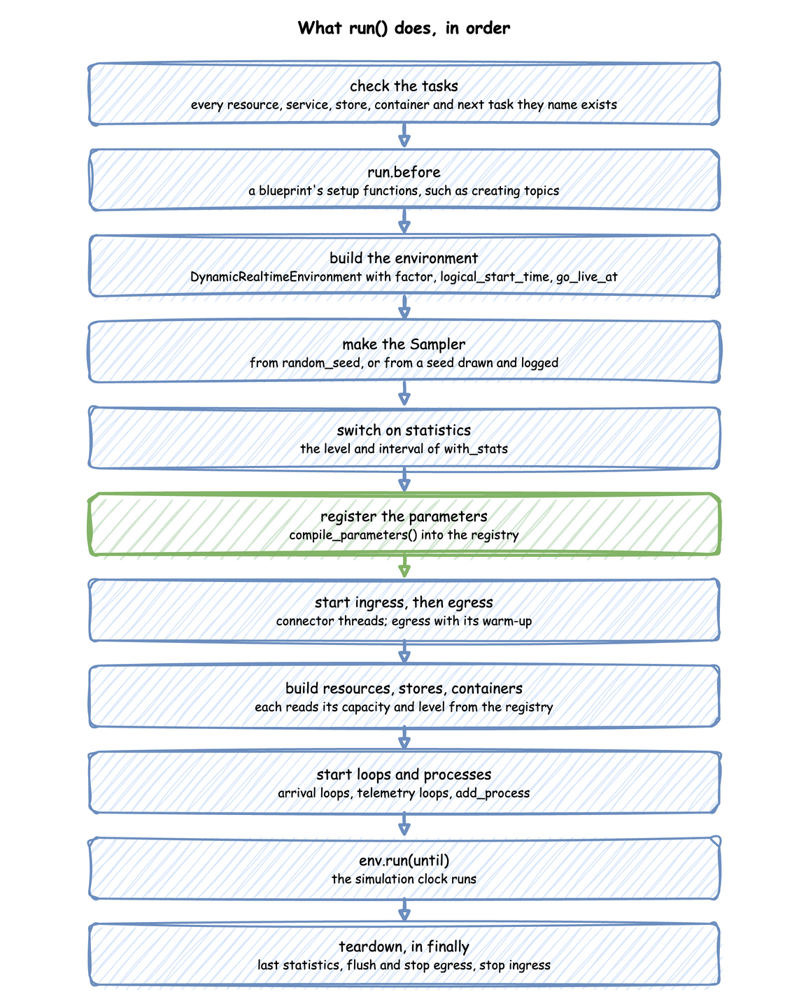
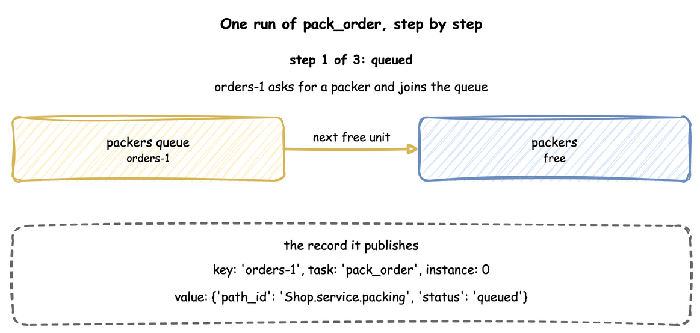

Tasks and Processes: SimulationContext
A task is what one entity does: an order being packed, a return being logged. A process is anything else that runs over time: packers going on a break every hour, a speed that drifts, a shift plan. This page shows how to write each, what run() does with them, and what a task does step by step.
What It Is
Both are SimPy generators: functions that yield to wait. The builder and YAML write the common ones for you, and the low-level API writes them by hand. A task waits for what it needs, does its work for a sampled time, publishes an event at each step, and may lead to the next task. A process can do anything a generator can: wait, change values in the registry, publish records or start tasks.
How to Use It
A Task
A task with a service and a resource asks for a unit of the resource, holds it for a time drawn from the service, and releases it. A task with neither takes no time and holds nothing: it publishes its payload at once, which suits an entity that only records that it happened, such as a return logged.
payload is a fixed mapping. A payload that changes per entity is a Python function, called as function(task_id, context):
The function is called with the task id and whatever the caller passes. It also receives entity, upstream and item by keyword when it declares a parameter of that name: the entity, what the previous task handed on, and what a store get took. A function that declares none of them works as before.
This is ordinary SimPy: packers.request() waits for a unit, env.timeout waits the service time, and leaving the with block releases the unit. env.publish_event at each step is what makes it produce records.
A task can also take from or add to a store or container (get, put), rank its requests (priority), and name the task that follows it (next); Stores and Containers, Resources and Task Flow describe each.
A Timed Step
A task with a service and no resource is a timed step: work that takes time but needs nothing that can be busy, such as printing a label or waiting for a supplier. It publishes started at once, with no queued event, waits the sampled time, and publishes its finished event. Its wait is 0. It is SimPy's env.timeout: the tests check that it ends at the same simulation time as a plain SimPy timeout in all three APIs (SimPy Compatibility).
Arrivals Start Tasks
An arrival starts one task per arrival. The loop draws a gap from the arrival's distribution, waits for that duration, starts a task for the new entity, and repeats; the task runs on its own while the loop waits for the next arrival.
context.wait_for_arrival returns the new Entity, whose key is the arrival name and a counter: orders-1, orders-2. Pass it to the task with entity=. A task called without one starts an entity of its own, keyed by the task's name and a counter, such as pack_order-1. The task_id becomes the record's instance. When next or a second arrival also starts the task, take the id from context.next_instance("pack_order") instead: it is the task's one counter, which next uses too, so no two runs of the task share an id.
In the low-level API every loop is started once, before the run:
A Process
A process runs alongside the tasks. This one sends the packers on a 5-second break every 50 seconds:
Setting current_cap to 0 stops new work but not the work in progress: Resources explains what happens to busy units when a capacity drops.
Wait, Signals and Child Flows
A task can wait for something before it queues for its resource: its wait. A wait has one branch, or any or all of several named branches, as SimPy's AnyOf and AllOf wait for the first or for every event:
| Branch | Waits for | Its value |
|---|---|---|
{signal: name} |
the next firing of a signal declared under signals (builder add_signal) |
the firing's value, the payload of the task that fired it |
{task: name} |
a child flow: that task, started for the same entity with its own instance id, and the tasks its next leads to, until the flow ends |
the last task's finished payload |
{timeout: 40 s} |
a time | none |
{condition: level.stock >= 5} |
a condition to hold, checked when the wait starts and again after every store or container change, registry update, signal firing and finished task | True |
A single branch is named after its signal or task, or timeout or condition. After the wait, wait.<branch>.done says whether the branch happened before the wait ended, .ok whether it succeeded, and .value (or .value.<field>) is its value; next, fail and amounts read them, and a builder function that declares wait receives them as a mapping. A task fires a signal with signal: name when it finishes, with its payload as the value, and signal.<name>.count, .ok and .value read the signal in any condition. The process-interaction example waits for a child flow, then for the first of a courier's signal and a time limit:
| examples/yaml/process_interaction.yaml:dispatch | |
|---|---|
| examples/builder/process_interaction_example.py:courier | |
|---|---|
context.signal(name) returns the Signal a process can fire, fail or wait for, and context.call(task, entity=...) starts a child flow from a process and returns its SimPy process, which a process can yield. context.spawn returns the process it starts too, so is_alive, triggered, ok and value inspect it, as in SimPy.
The low-level API is SimPy: a child is env.process(...), its value is what it returns, and env.any_of and env.all_of wait for the first or for every event. Signal(env, name) is the named event the builder and YAML use; env.watch_changes(check) calls check after every change a condition can read.
The task publishes queued when its wait starts, so the wait counts in its wait statistics, and its patience covers the wait as well as its resource and its get. When an any wait ends, its losing signal, timeout and condition branches are dropped, and its losing child flows keep running, as SimPy leaves processes running; Wait for One or All shows ties and failures. A wait holds no resource, so waiting for all of several things grants nothing at once.
Failures
A task fails when its fail condition holds after its service, when the wait it needs fails, or when its function raises: a builder task's function, or a YAML task's !python payload function. fail reads the task's own payload as payload.<field>, as next does. A failed task publishes failed with a reason, the condition's text or its fail_reason, instead of its finished payload; it fails its signal, so every waiter of the signal fails too; and it goes to its on_fail task. Without on_fail the entity's flow ends, and a child flow fails the task waiting for it, with the same reason. Each failure is counted as tasks.<task>.failed, and a flow that ends in one as flows.<arrival>.failed, at basic and above. The inspect task of the example above fails a gift and sends it to be wrapped.
In the low-level API a failure is SimPy's: an exception raised in a process reaches the process that yields it, and one nobody handles stops the run. The builder and YAML end only the entity's flow, because a data generator should not stop on one failed order.
Example: Process Interaction
The process-interaction example puts these together: a child flow, a failure that on_fail handles, and orders that wait for a courier's signal or a time limit. It needs no Docker service and ends on its own after 300 simulation seconds.
Quick Start
desflow examples get downloads the example at the release you install, into a folder of its own. Pick uv or pip:
The whole file is examples/yaml/process_interaction.yaml.
Quick Start
desflow examples get downloads the example at the release you install, into a folder of its own. Pick uv or pip:
The whole file is examples/builder/process_interaction_example.py.
Quick Start
desflow examples get downloads the example at the release you install, into a folder of its own. Pick uv or pip:
The whole file is examples/low-level/process_interaction_example.py.
Records of a Task
Every event of a task carries three fields beside its value: key, the entity's key; task, the task's name; and instance, the number of this run of the task, counted from 0 for each task. The first order of the blueprint in A Task, packed and then labelled:
All five events share the key orders-1, so an order can be followed through every task it passes. The finished event's value is exactly the payload. Records and Telemetry describes every field.
How It Works
What run() Does
run() builds everything the context describes and runs it, in this order:

Until run() is called nothing exists but the description: context.env, context.spawn and context.get_resource raise RuntimeError before it. Teardown runs in a finally block, so the last statistics are published and every sink is flushed even when the run stops with an error or Ctrl+C.
What @app.task Does
@app.task turns your function into a SimPy process that does these steps, publishing a record at three of them:

- If its
balkcondition holds, it publishesbalkedand stops. - If it has a
wait, a resource or aget, it publishesqueued, starts itspatiencetimer, which runs only while it waits, and waits for itswait. - It asks for the resource, in the resource's queue order, then takes its
getfrom a store or container, waiting while there is not enough. - It publishes
started, calls your function, and keeps what it returns as the payload. The payload is computed before the service time, so it can use the state of the simulation at that moment. - It waits the service time, drawn from the live distribution.
- It adds its
putto a store or container, waiting while there is no room, and checks itsfailcondition. - It publishes the payload as the finished event, or
failed, and releases the resource. - It fires its
signal(or fails it), sends itsinterruptaction to the tasks it names, appliessetto the entity's attributes, and starts the next task itsnextchooses, or itson_failtask, as a new instance for the same entity.
A YAML task and its spawn make the same task and arrival loop that the builder code above makes. The code that runs these steps is TaskRun in desflow/core/task.py. In SimPy terms each task run is one process started with env.process, and each arrival loop is another; SimPy and desflow describes processes.
Processes and the Low-level API
add_process(func, **kwargs) starts func(context, **kwargs) when the run starts, and a YAML processes entry does the same with a !python function. Inside it, context.env is the DynamicRealtimeEnvironment, so a process can do anything a low-level script does: context.env.timeout, context.env.registry.update, context.env.publish_event. This is how low-level code joins a builder or YAML model.
Stability and Limits
- Resources are acquired in one order. A task can hold several resources and hand one to the next task, but tasks that acquire two resources in opposite orders are refused: Resources.
- An interrupt gives back everything. An interrupted task cancels its waits and releases every unit it holds before it follows its
on_interrupt, so a resumed task queues again behind the requests already waiting: Interruptions. - A finished event is exactly the payload. It has no
statusorpath_idunless the payload includes them. - A condition branch checks after every change. A model with many waits on conditions and many changes does work in proportion to both.
- Runtime helpers need a running simulation.
context.spawn,context.call,context.signal,context.get_resource,context.get_store,context.get_containerandcontext.envraiseRuntimeErrorbeforerun(); call them inside a loop, task or process.